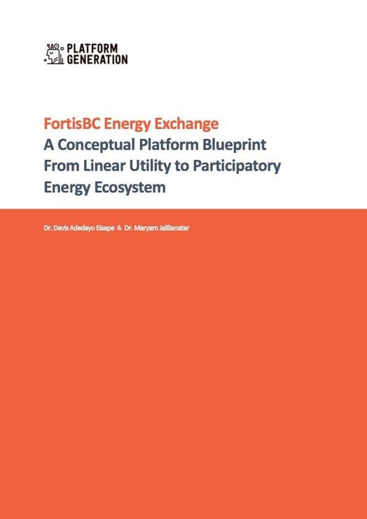

Platforms, business models, innovation
My publications investigate how platforms work and how they shape ecosystems and innovation.
This is a little nerd corner for platform enthusiasts, researchers, and pattern seekers out there.
We live in a world shaped by platforms. We are the Platform Generation: learning to read platforms, create them, and notice how they shape us in return.
I’m Davis, a guest researcher at the Technical University of Berlin. I developed the Platform Business Model Canvas to decipher how platforms work and help design new ones. Feel free to explore and use the information in my little corner of the internet.
Explore the PBMC LibraryMy publications investigate how platforms work and how they shape ecosystems and innovation.

An exploratory conceptual platform blueprint from linear utility to participatory energy ecosystem, co-authored with Dr. Maryam Jalilianatar.
Some ideas work better as a video, others as an essay or a newsletter.
My personal website holds the longer story. I’m also on LinkedIn and in the research directories above.
Other people are exploring platform questions too.